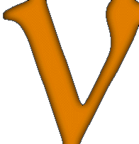

Some SNEWS Background Information
Brief description of the project.
A more detailed writeup.
Postscript 537 kB (now rather out of date)
A
popular history of astronomy
, with an emphasis on supernovae and neutrinos.
Poster shown at the Neutrino '98 conference in Takayama.
Postscript 1.6 MB
Poster
shown at the 1999 Maryland October Astrophysics Conference
Cosmic Explosions!
conference. The resulting conference proceedings are
astro-ph/9912293
.
Conference proceedings paper
of the
3rd Amaldi Conference on Gravitational Waves
(
astro-ph/9911359
). Postscript 152 kB
SNEWS technical paper posted at
astro-ph/0406214
.
SNEWS poster
at
Neutrino 2004, Paris
.
